Attribution, in-silico mutagenesis, and predicting the effect of non-coding variants
How a CNN reads DNA trained a small network that tells GM12878 CTCF peaks from GC-matched background (test AUC 0.97). Two questions follow:
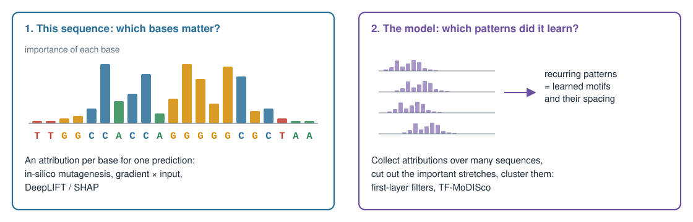
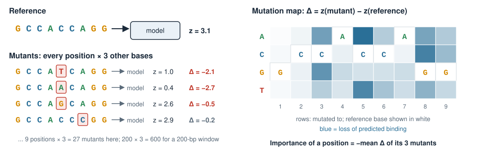
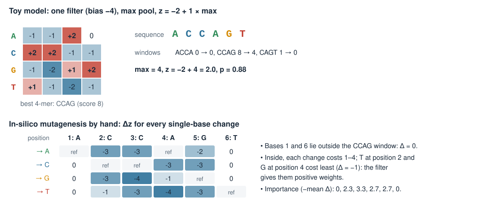
ACCAGT: z = 2.0.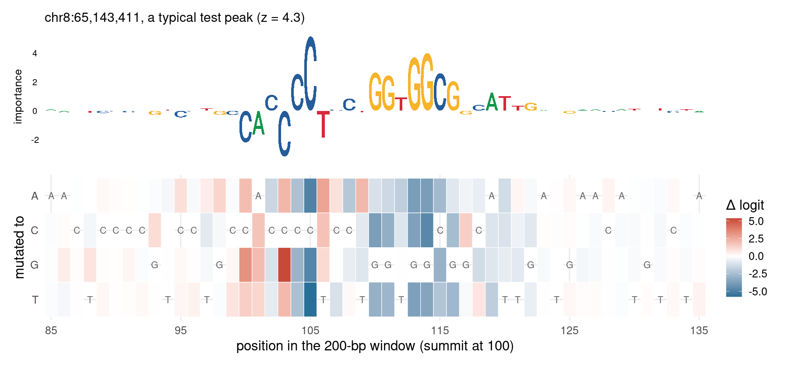
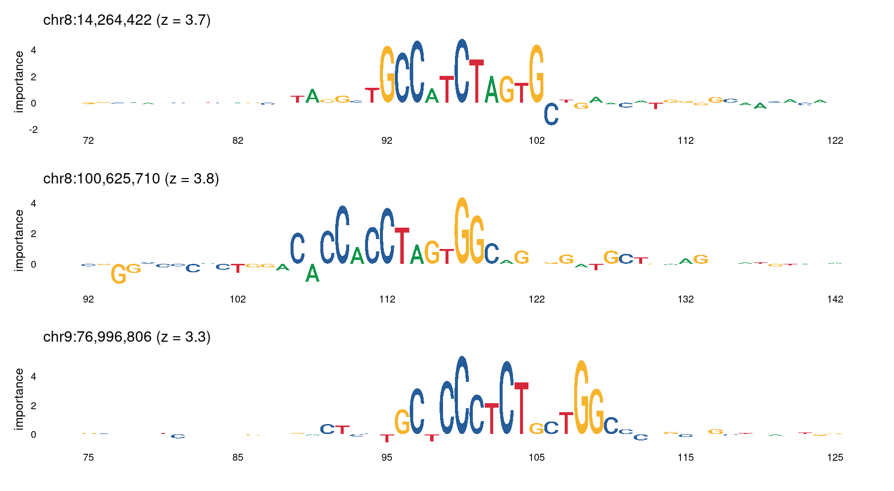
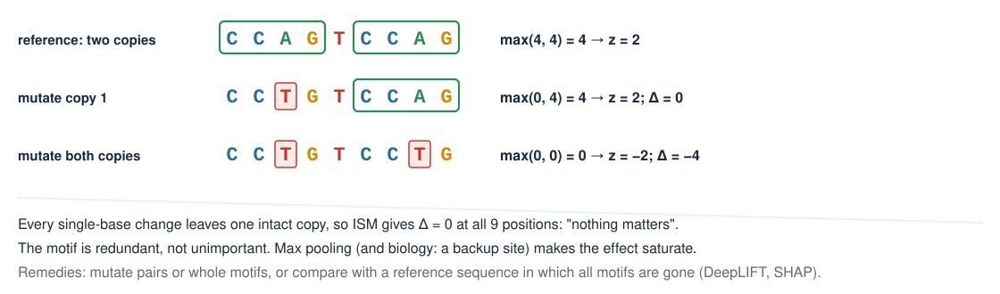
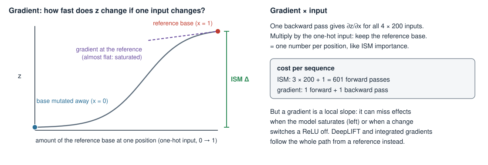
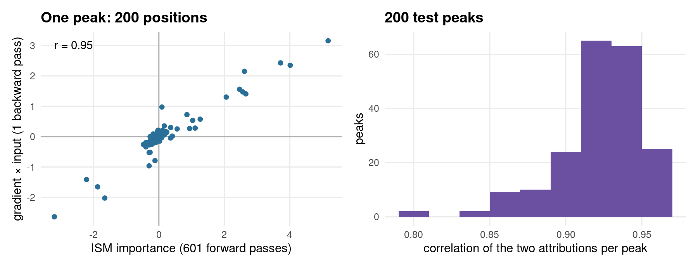
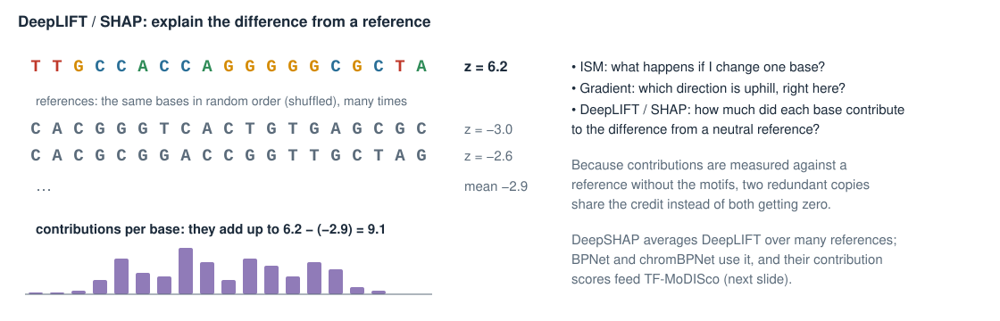
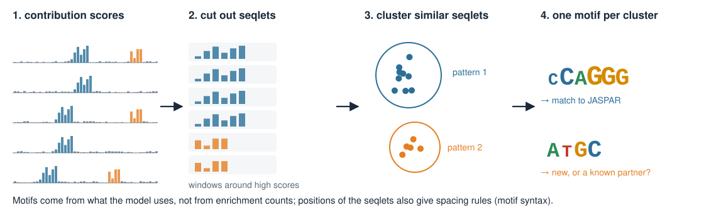
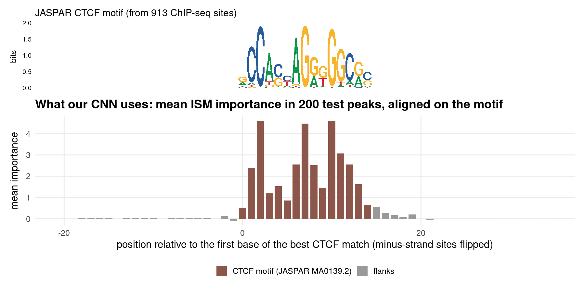
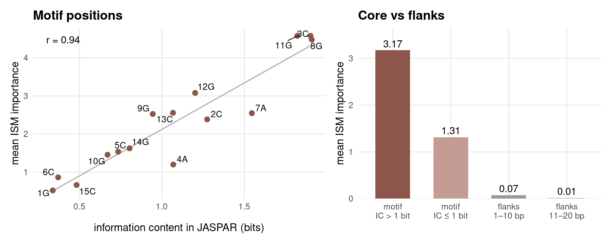
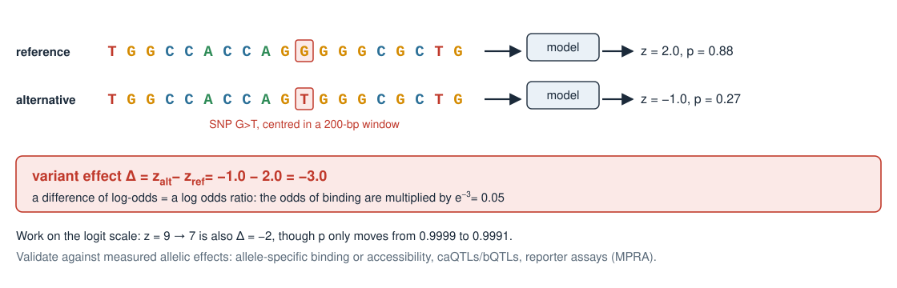
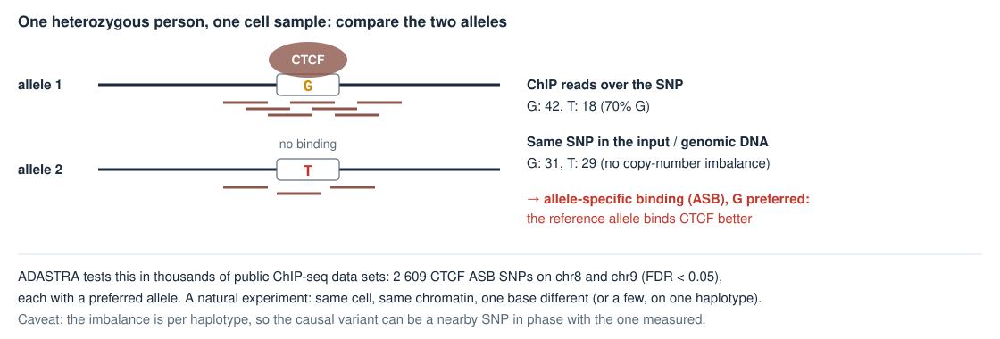
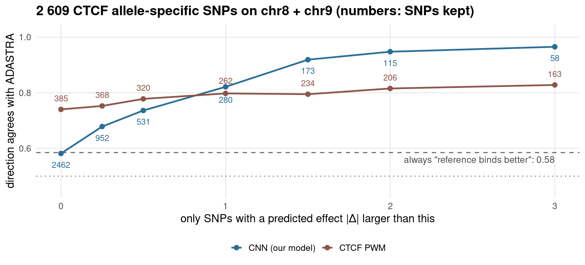
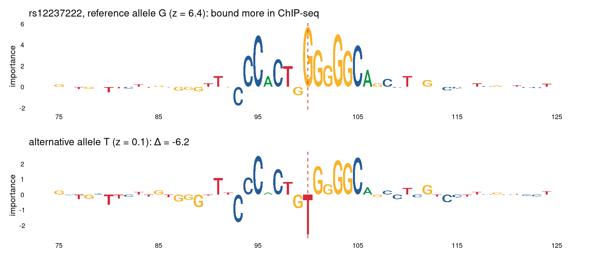
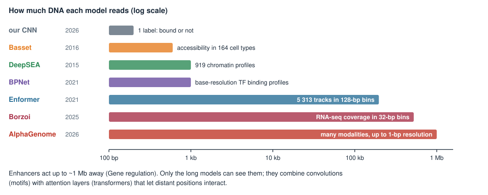
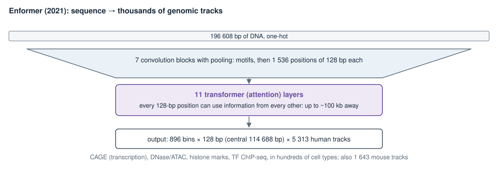
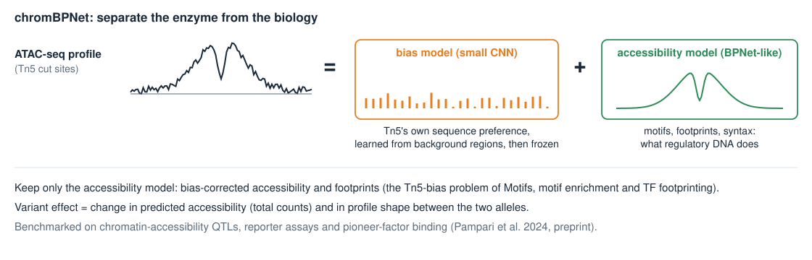
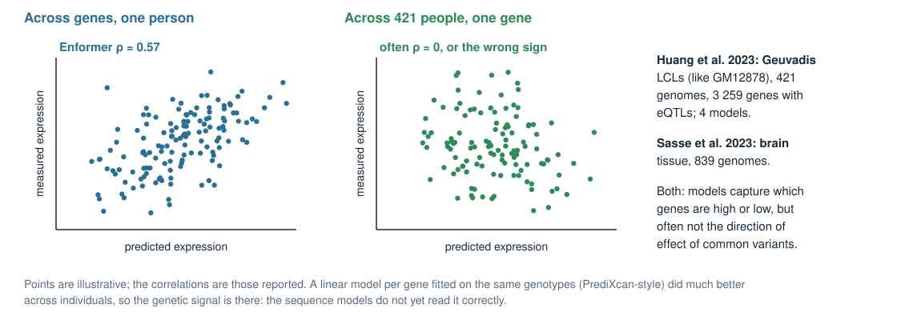
| idea | key fact |
|---|---|
| attribution | importance of each input base for one prediction |
| in-silico mutagenesis | Δ = z(mutant) − z(ref) for all 3L substitutions; importance = −mean Δ |
| saturation | redundant motifs (or a saturated output) hide each other from single mutations |
| gradient × input | one backward pass, linear approximation of ISM (r ≈ 0.93 for our model) |
| DeepLIFT / SHAP | contributions relative to a reference; they sum to f(x) − f(ref) |
| TF-MoDISco | cluster high-attribution seqlets into motifs and syntax |
| our CTCF CNN | importance follows JASPAR information content (r = 0.94); flanks ≈ 0 |
| variant effect | Δ = z(alt) − z(ref), a log odds ratio |
| ASB SNPs (ADASTRA) | 58% right overall (= baseline); 82% for |Δ| > 1, 95% for |Δ| > 2 |
| big models | Enformer 196 kb, Borzoi 524 kb, AlphaGenome 1 Mb; still poor across individuals |
Not required reading and not examined. For those who want the primary literature.